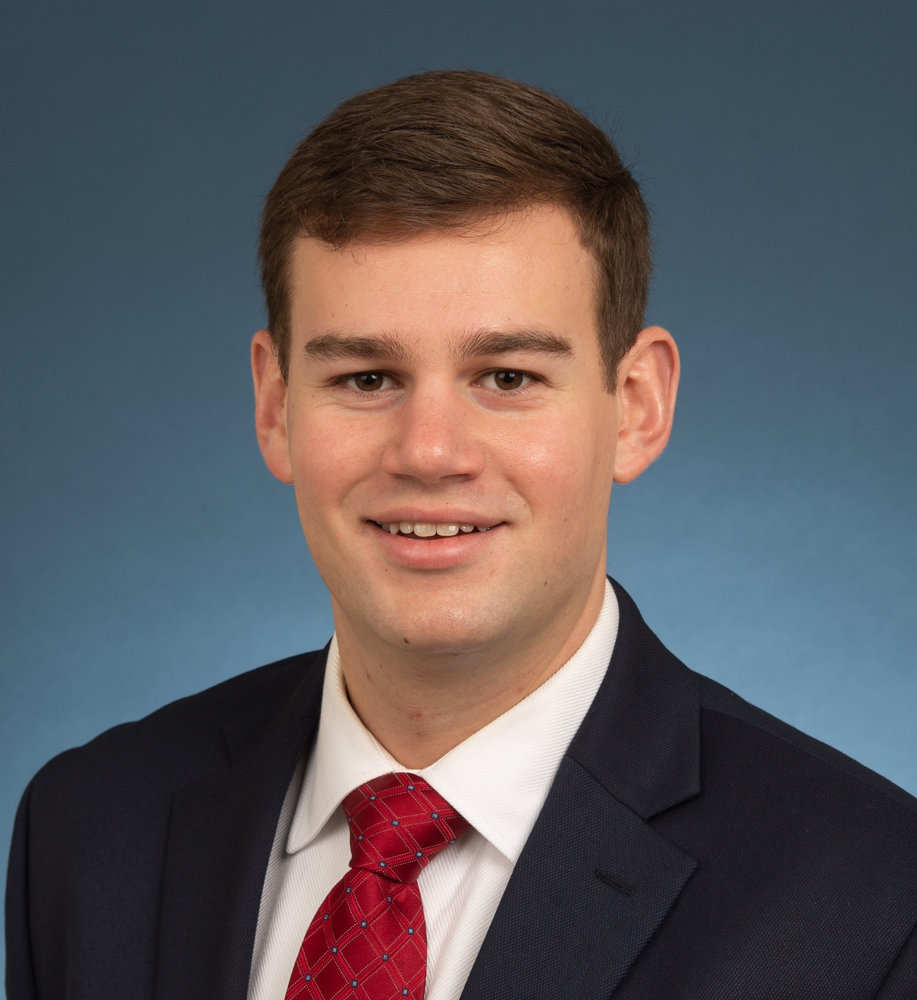
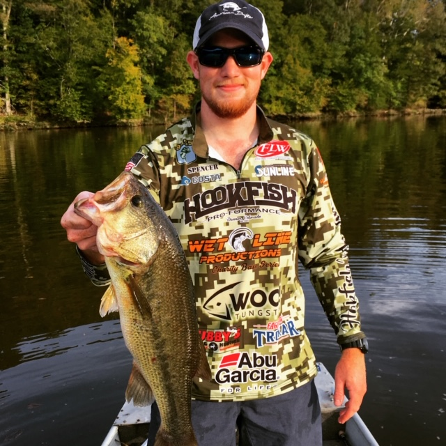
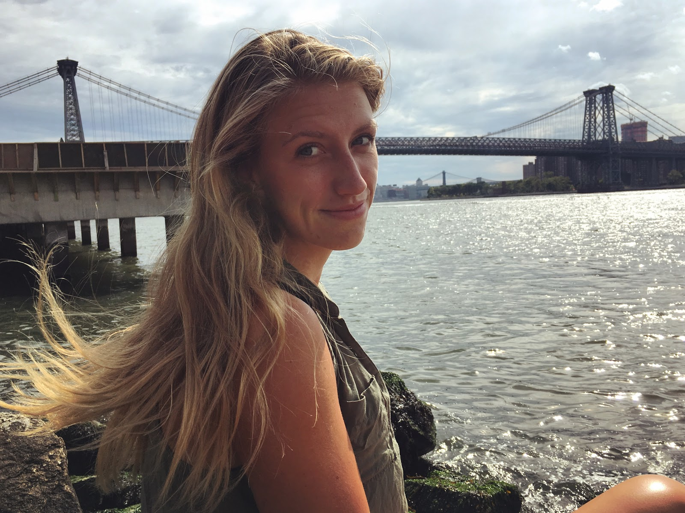
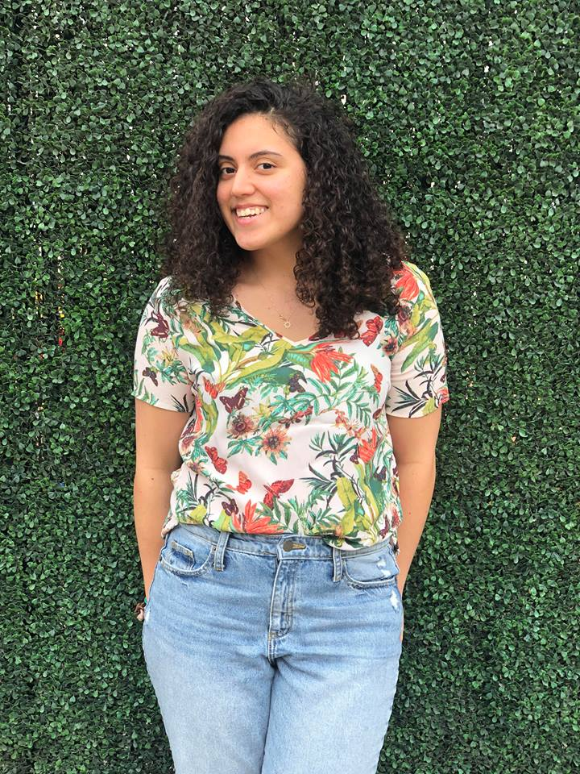

Mother of the Bride: Lori Settles
My mom is the most supportive human being in the world; my #1 cheerleader for life. I truly would not have accomplished half of what I have if it weren’t for her. She has stood through ten-hour-long track meets in sleeting and freezing conditions just to watch a mediocre athlete (me) run a bunch of circles around an oval with some lines on it. She has been, and still is, there for me through everything; no matter the miles between us physically. She is the caring and compassionate person I always wish I could be. If you’re looking to find my mom, the path won’t come easy. You’ll probably need to bushwhack through shrubs, thistles, and brambles to get there. However, she can usually eventually be found crouching down with her camera, waiting silently and patiently for the perfect shot of wildlife that most NOVA residents never even knew existed in their own backyards.
Mother of the Groom: Sharon Pastino
Sharon is the best mom anyone could ask for. She was a nurse and the best cook I know. She ruined restaurant food for me because nothing will be as good as her kitchen. I didn't even know you could buy spaghetti sauce pre made until high school, I assumed you had to make it from scratch like she always did. She's most likely to be found at Lake Anna on the dock, boat, or deck with a book in one hand and glass of wine in the other.
Father of the Bride: Barney Settles
My dad is the hands-down hardest worker I know. I have never met someone who has put in as many hours to support their family as he has. As a kid, we used to call Sunday our “Sunday Fun-day” because it was the only day of the week my dad had off from work and we could all be together. Christmas Eve and Easter are the only holidays he ever takes. Starting his own business and becoming a master at his trade, I only hope to be half as successful in what I do one day as he is. My dad has the best “dad jokes” around and is always making me laugh. He is my go-to Sunday morning gym buddy with an impressive pull up max. When he’s not at work, you will often find him squinting (because he lost his glasses - again) at a novel on the physics of black holes or you may find him making a beeline for the meat aisle at the grocery store, a man on a mission to find the area’s best deal on a T-bone steak for dinner tonight.
Father of the Groom: John Pastino
My dad is the one who started my addiction to hunting and fishing. My favorite childhood memories are fishing on the boat or being in a tree stand together. We call each other multiple times a week to talk...mostly about fishing, sometimes about hunting, just depends on the season. You can normally find him at the lake working in the yard until it’s time for a cold Coors' light.
Maid of Honor: Becca
Jessy and I met through running club the beginning of freshman year in college and became inseparable since. I would drag her out to the bars and she would drag me out for a run. No better relationship than that. I knew Jessy was going to be one of my best friends when we would run 40+ miles a week and still feel like we needed more time to gossip. I can’t wait to grow old with you and Matt. (You best believe third wheeling doesn’t stop when you get married.)

Best Man: Alex
I met the groom when I was 2 years old and Matt was born. While the initial prospect of having a little brother was welcomed because it would mean another friend and partner in crime, it quickly turned into resentment as a 10 pound crying and shitting machine vacuumed away all the love and affection of our parents. However, after the initial attention sharing trauma, We grew to become the companions I had hoped for, with some mild bullying as big brothers do as reparations. The defining moment of our brotherhood was when Matt entered high school and we realized we were better off playing as a team against our parents instead of as two individuals with our parents as the referee. From then on the phrase “don’t tell mom” wasn’t a useless plea as the other ran away crying, but one that provided a blanket of safety from whatever debauchery had just, or was about to occur. I met Jessy when her and Matt started dating 6 years ago. My initial callousness towards her was based again on having to share attention with someone I had grown close to. Nevertheless, over the last few years as I saw how happy she made Matt and how their love had grown into a legitimate and formable force, I grew to love her too.

Bridesmaid: Alyssa
Well I am Jessy’s sister so we met at my birth (I have known her a year and a half before Holly NBD). We have gone through highs and lows in our relationship as any siblings do. I am happy to say we have had nothing but highs since adulthood and having to not see her everyday when she entered college was a sad transition to make. It is even harder now that she is all the way in Florida. Despite the distance I still love her and can’t wait to welcome Matt to officially being part of the family(even though we all already thought of him as it years ago).

Groomsman: Andrew
As one of Matt’s cousins, we’ve been lucky to build countless memories and share in plenty of embarrassing stories through the years. From flipping canoes on the river at 11pm to putting holes in basement walls as teenage boys deciding inside football was a great idea, there’s rarely been a dull moment. While we’ve pretended to learn from previous mistakes, it seems as we grow up the essence of the stories never change, rather the lessons get more expensive. I’m truly honored to be a part of this momentous day, and welcome to the family Jessy!
Bridesmaid: Holly
I am Holly, one of Jessy's younger sisters and her favorite. Jessy has always been a great role model to me and I know she always has my back. When we ran track together I remember she would see me always struggling to get up this big hill and she would run with me and cheer me on until I was able to finish. I am so excited to see her get married to Matt and I am so happy that I got to see them together even as awkward teens.

Groomsman: Spencer
I cannot remember where it all starts which makes things super simple. I was born 2 long months before Matt and I had no idea what I was missing in that time frame; I just knew I was all alone without a fishing buddy and without a new cousin. Growing up together and spending a majority of our time at Lake Anna involving 1/4 responsible and 3/4 irresponsible activities has done nothing but solidified our relationship and given us the ability to make our family stronger. Just to paint a quick picture the responsible activities included fishing and more fishing and from what I remember the irresponsible ones included "what happens at the lake stays at the lake". Our young questionable choices soon hit a lull and became more sensible when Jessy entered our lives years ago. She has brought nothing but good things to Matt and our family and most importantly makes him happy. This is most likely because she didn't cut Matt down on the fishing. I now have the privilege to be a part of this big day and know that there are only more memories, responsible memories, for all of us to make and cherish together in the future. Welcome to the family Jessy!
Bridesmaid: Amy
I met Jessy as a Freshman on the Virginia Tech running club. My initial thoughts were “damn that girl is fast and scary.”- She definitely is fast, but not so much the scary part. We bonded on long runs and stays at one-star motels while traveling to track meets. I have always admired Jessy for her hard work and dedication. Without a doubt, I would be 10+ pounds heavier if it weren’t for her positive influence. I cannot imagine my time at Tech without her and I cannot wait to stand by her as she says “I do”.

Groomsman: Sean
Matt and Jessy have been two of my closest friends for a large part of my life. I met Jessy a long time ago when she moved into my neighborhood, where we could be seen waiting for the bus or walking to the nearest Giant, flip phone in hand. Matt and I hit it off sometime in middle school fueled by our interest in fishing and horrible jokes, eventually leading to all of our timeless adventures throughout springfield. We all ran cross country and track together in high school, where the trauma of running only brought us closer. Through college we stayed close, hanging out every break we got, up until now where two of my best friends are getting married!

Bridesmaid: Julia
I was the worst Chem lab partner Jessy could have asked for, there is no question- she carried me through that class. After that first semester of college, she probably thought she could finally be rid of me. But, I adamantly inserted myself into her life by sitting next to her in all five classes we had together for the first two years of school. She intrigued me, I could tell there were lovable quirky qualities beneath the focused, hardcore (and intimidating) attitude she carried through our classes. FINALLY, junior year, we walked out of class one day and she says ‘Which way are you walking?’ and in my mind this is what happened: JESSY WANTS TO WALK WITH ME = FRIENDS <3 <3 <3 Senior year could not have been better. Not only did we become dietetics power partners, but between the wine nights and exercise excursions, I truly did gain a friend worth waiting for.

Groomsman: David
I first met Matt through the great ROTC Pirate Battalion in college. Needless to say, the 5am wakeups and classic challenges that came with the program made free weekends that much better. Junior year rolled around and we got a house together with a couple of other ROTC roommates to kick off the last half of our college career. I thought it’d be a good decision since Matt had a boat. Turns out he’s a decent fisher and I guess it seemed like a solid reason to bring his boat down to the Carolinas. Those two years came with their own set of challenges though as we juggled the possibility of having a good time, being students, cadets, and dealing with the shenanigans that were proposed by a dysfunctional house of four. To name a few examples: hitting golf balls over the tar river behind our house (AKA: The Tar River Open), somewhat successful DIY home maintenance, using the oven as a heater when no one wanted to actually turn on the heat, running back from Supdogs after a few nights of dangerously cheap drinks, fighting off raccoons in the backyard, eating late-night sandwiches on the roof, and a lot of beers. When it comes down to it, you know you’ve spent a lot of time with someone when you can throw a beer across a room of people without saying anything and know they’ll catch it anyway. It went something like this, as dictated by one of our friends: “Whoa. Did you jus-?” Yeah, that happened.” However, despite all the fun in college, we both ended up at flight school. I guess we left enough room for academics after all. And I’d call that a success. So here we are, kicking off round two of being roommates down at Fort Rucker. Here’s to meeting Jessy through Matt, who’s been positively influencing my lifestyle to be a little healthier. Here’s to an incredible day for the two in October. And here’s to the continuation of throwing beers across the room without the need for any communication.

Bridesmaid: Sophia
Jessy and I have been friends since we were 9 years old. Jessy and I lived right across the street from each other. We lived so close to each other that we could see each other from our living room windows. Having your best friend live across the street from you is the ultimate dream as a kid. We would go to the pool together every day during the summer, we'd walk over to each other's houses in our PJs on Christmas Day, we borrowed each others' clothes (I specifically remember borrowing Jessy's black choker necklace in sixth grade and feeling like such a cool girl), and we even attempted to make the most amazing music video to Rihanna's "Umbrella" (I still know all the lyrics to that song). As we've grown older, our friendship has remained strong and I feel truly blessed to have a friend like Jessy. Matt is one lucky man, and I'm so happy for both of them as they start the next chapter of their lives together!